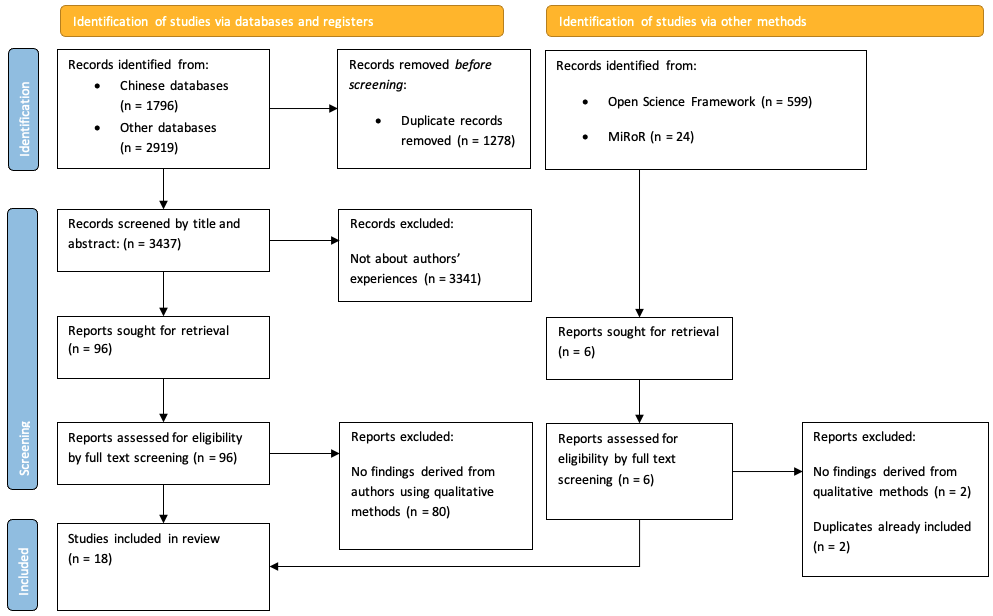

What facilitators and barriers might researchers encounter when using reporting guidelines? Part 1: A thematic synthesis
Introduction
In chapter 1 I described a number of studies that found that reporting guidelines have only had a modest impact on reporting quality. Although a few of these studies put forward some possible explanations for their disappointing findings, these were often based on assumption and none of these studies included a qualitative components to better understand why reporting guidelines were (or were not) working.
Researcher’s behaviour may be influenced by any part of the reporting guideline system, including the guidance itself (typically published in an academic article), tools (e.g., checklists), websites (e.g., journal instructions, the EQUATOR Network website, guideline-specific websites), and the behaviour of others (e.g., editors, peer reviewers, co-authors, colleagues). Because reporting guidelines are generally disseminated in similar ways, barriers and facilitators identified for one guideline are likely to generalise to another.
In this chapter, I explain how I synthesised qualitative studies exploring authors’ experiences of reporting guidelines in order to identify behavioural influences that may affect whether an author adheres to reporting guidelines.
Methods
I performed a thematic synthesis of qualitative research that explored researchers’ experiences of reporting guidelines. When writing this chapter, I used the ENTREQ guidelines for reporting qualitative evidence syntheses and the PRISMA-S guidelines for reporting systematic searches [1, 2].
Approach to searching and data sources
My search strategy sought all research articles that collected qualitative data exploring researchers’ experiences of using reporting guidelines. I wanted to capture the experiences of researchers from around the world, so I included international databases in my information sources. All data sources are listed in Table 1.
Inclusion and exclusion criteria
I included studies that reported researchers’ experiences of using reporting guidelines derived through qualitative methods. I excluded articles written before 1996, the year that the CONSORT statement was first published. Any articles not written in English, Chinese, Spanish, or Portuguese were excluded during screening.
I included records reporting feedback from researchers as part of guideline development. I decided not to include reporting guideline development studies where this feedback came exclusively from the development group members, as I considered this context to be too different to how ordinary researchers experience reporting guidelines.
I found many studies that used a mix of quantitative and qualitative questions. I did not consider categorical survey questions with a free text option for “other” to be qualitative, but I did include findings from free text questions that invited participants to provide context to a previous (not qualitative) question. I describe the quantitative studies and the kinds of questions they asked in an accompanying commentary (in press).
Electronic search strategy
A search specialist (SK) helped develop the comprehensive search strategies, which had a component for reporting guidelines and another for qualitative methods. I constructed my reporting guidelines component from the acronyms of frequently accessed guidelines (Table 2) with generic terms for reporting guidelines to capture guidelines not named explicitly. My qualitative component came from a review of search filters[3], which recommended a sensitive qualitative filter for systematic reviews[4]. I extended the filter to include descriptive methods because I knew some of my target records were mixed method surveys. I conducted scoping searches, but my search strategies were not peer reviewed before execution. My search strategies are reported fully in the Appendix.
Screening
YD screened Chinese records and asked LZ for second opinions when necessary. I screened all other records, of which MS double-screened a random 10% sample and differences were resolved through discussion. YD and I screened titles and abstracts to identify records that explored researchers’ experiences and then screened full texts to identify whether those articles used qualitative methods.
Describing and appraising records
I extracted study characteristics and used the Critical Appraisal Skills Programme Qualitative (CASP-Qual) checklist [5] to critically appraise included studies, which helped him and JdB consider the strengths and weaknesses of each study when synthesising them.
Synthesis methodology
I used thematic synthesis as defined by Thomas and Harden[6] because it can handle studies with “thin” descriptions, it allowed us to infer facilitators and barriers from research that may not have addressed my concern directly, and because I expected its output, grouped by themes, to be useful to guideline developers.
I imported files into NVivo 12.0 for Mac and coded all sentences from the results section and relevant supplementary materials that reported qualitative findings. I assigned each sentence one or more descriptive codes that sought to distil the essence of what was written, creating new codes when necessary and without using a framework. I then used mind-mapping software[7] to visualise similarities and differences between codes and aggregate them inductively into descriptive themes that captured the meaning of the codes they contained. I then used my research question to infer facilitators and barriers from these descriptive themes and to understand the context in which these occur, thereby producing analytic themes. I discussed all steps with JdB, resolving conflicts through discussion when necessary.
Results
Search
My search yielded 18 articles (see Figure 1 for full search results). I and MS double-screened 10% of the non-Chinese titles and abstracts and agreed on 98.3% of them (170/173). The remaining three were resolved after discussion and consensus. All eligible records were written in English and included surveys, semi-structured interviews, focus groups, and writing tasks.

Only 7 of the 18 records reported where participants came from. Three mixed method survey studies [8–10] included participants from a wide range of countries but it was not possible to tell which participants completed the optional qualitative questions. Four interview studies [11–13] included participants who were almost exclusively from North America, Europe, and Australia, with one participant from Brazil.
Critical appraisal of the studies using CASP-Qual rated the studies ranging from valuable to not very valuable; the less valuable studies had few qualitative components or minimal reporting of qualitative analysis or findings. Study characteristics are reported in Table 3.
Synthesis findings
The relationships between my codes, descriptive themes, and analytic themes are reported in Table 4. I identified the following analytic themes: 1) Researchers may not understand guidance as intended or what reporting guidelines are, even if they think they do; 2) Researchers report a variety of reasons for using reporting guidelines, and that some are more important than others; 3) Researchers report using reporting guidelines for different tasks and wanting guidance to be delivered in ways that better fit their needs; 4) Using reporting guidelines has costs which researchers may feel outweigh benefits; 5) Reporting guidelines may need to be revised and updated; 6) Researchers may not be able to report all items, which can leave them feeling uncertain or worried; 7) Awareness and accessibility may limit reporting guideline usage; 8) Reporting guidelines may be more useful to less experienced researchers, but these researchers may find them harder to use; 9) Researchers want or need design advice, but reporting guidelines may not be the right place to find it; 10) Reporting guidelines can be harder to use if their scope is too broad, too narrow, or poorly defined; 11) Researchers may have to use multiple sets of reporting guidelines, multiplying complexity and costs; 12) Researchers may use checklists but never read the full guidance.
I identified that ‘barriers’ and ‘facilitators’ were not consistent experiences. What may be a barrier for one person might be a facilitator to others or when occurring in different context, and so I refrained from labelling my analytic themes as one or the other.
1) Researchers may not understand guidance as intended or what reporting guidelines are, even if they think they do
Researchers commonly stated that they need more information to fully understand the intention of the guideline developer. When asked about the clarity of guidance, researchers across many studies reported difficulty in understanding certain terms, concepts, or checklist items:
‘outcome’: “Does it mean the domain, or does it mean the domain measure, metric, method of aggregation, and time?”[14].
“Primary and secondary improvement related question is confusing, what does that mean?… I had a hard time with the [difference between the] improvement question and the study question.”[11]
A few researchers reported ignoring an item if they could not understand it:
“Only one item was identified as hard to understand by more than one respondent: ‘methods employed to ensure completeness of data’, which two participants said they left out because of difficulty in comprehending the item”[15]
Some researchers reported feeling that reporting guidelines were “simply not comprehensible”[11]. Others reported that they had understood, but further investigation revealed that their interpretations could be “different from that intended by the developers”[15]. For example, Davies et al. [15] found that one SQUIRE item “was reported as used fully [in the quantitative survey], but the qualitative analysis revealed that its usage was frequently inconsistent with the intention of the developers”. One reason for this may be because different researchers may interpret the guidance in different ways depending on their prior experience, the research context, or if the guidance is ambiguous. For example, the SQUIRE developers found that the word ‘theory’ “meant different things to different people. For some, the word ‘theory’ meant ‘mechanism by which an intervention was expected to work’, for others it meant ‘lean or six sigma for example’, and for still others it meant ‘logic model’”[11].
Even when researchers reported understanding what an item meant, they may not have understood why it is important or who it is important to, leading them to remark that an item “seems unnecessary“[16]. Few researchers referenced the needs of evidence synthesizers or patients as consumers of research, but more reported considering whether an item would be useful to other researchers, editors, and reviewers:
“the information provided does not matter as the reviewers do not know what to do with it’’[10]
In addition to not understanding guidance or who it is important to, many researchers expressed difficulty understanding whether an item was applicable to their work. Some reporting guidelines specify that not all items are compulsory or that some items may only apply to a subset of research articles. Researchers highlighted that this may not be obvious, especially if this nuance is buried in a long elaboration document. Some researchers therefore reported uncertainty over which items applied to them:
“Authors asked for clarification of which items were always required and which were nonessential”[17]
“Not always clear what was relevant to their study”[16]
“He had realised with experience and re-reading the Guidelines that SQUIRE did not require him to include every item in the manuscript”.[11]
This uncertainty may extend to the entire reporting guideline if researchers don’t know when to use one over another. One researcher declared that “PRISMA guidelines can also be used rather than the MOOSE”[18], when the two are primarily for reviews of intervention studies and observational studies respectively. Sometimes there may not be a perfect reporting guideline for a given study, as one researcher commented after using ARRIVE (which focusses on experimental research involving laboratory animals):
“Our report was an animal based cadaveric study looking at accuracy of drill guides. I were unsure which category it should fall under.”[16]
Even if a researcher understands the guidance, why it is important, and why it applies to them, they may not understand how to report it or “how much detail to report”[16]. Some researchers “used examples [included in the guidance] to understand what should be reported” because they “demonstrate what is meant in practice”[16].
At a more fundamental level, researchers varied in their understanding of what reporting guidelines are. Often researchers would talk about reporting guidelines as if they were design guidelines, e.g., describing STROBE as “woefully deficient in encouraging…use of appropriate data analytic approaches”[10]. This suggested that the researcher had not noticed the stipulation that “these recommendations are not prescriptions for designing or conducting studies” included in STROBE’s explanation and elaboration document[19]. Other researchers wrote about STARD as is if the guidance was to be used when collecting imaging data:
“Two comments suggested that reporting quality may be impacted by the physical environment in which […] data are collected. These comments may indicate an incomplete understanding of reporting guidelines which pertain to reporting results during manuscript writing, not the process of imaging acquisition itself.”[20]
2) Researchers report a variety of reasons for using reporting guidelines, and that some are more important than others
Some researchers listed personal benefits to using reporting guidelines. Some described reporting guidelines as a “training tool”[21] for personal development, noting that guidance helps “develop a strong foundation and habits”[10]. Some talked about how guidance made them feel: “As a junior scientist it gives me confidence to request the reporting of a certain piece of information”[10]. Others said that reporting guidelines are “a helpful reminder”[21] and that going through the checklist “improved their manuscripts”[22]. Some saw value in fostering a “transparent reporting process”[8] and for making sure your “project is written up as rigorously”[11].
A couple of researchers noted altruistic benefits, reporting that widespread reporting guideline adherence “helps in standardizing how research is reported”[10] and calling “for more scientific reports to be published, preferably using a template or guideline to make them comparable”[23].
In the absence of anticipated benefits, some researchers said that they use reporting guidelines simply because “it was what was implicitly expected of them to do”[12], and that these expectations came from journals and their peers. Some used “tools promoted by journals, which often promised to ease the publishing process”[23] but others wrote that they found this to be an empty promise:
‘’I have never had (nor have I heard of) an editor or reviewer pushing back on a claim that all STROBE criteria were met. Therefore, when a STROBE checklist is required for manuscript submission, it seems to turn into a[n] exercise in additional administrative busywork without really improving the research.’’[10]
A few researchers reported being more likely to comply with journal requirements if they thought the journal was likely to enforce them: “Does the journal only suggest or actually require submission of a reporting guideline checklist?”[12]. Some said they were more likely to comply if “it was a high impact factor journal and I thought that I would only get one crack at it”[12].
A few researchers compared different motivations for using reporting guidance, noting that personal, guaranteed, and immediate benefits were more motivating than hypothetical benefits or benefits to others:
“I suppose you are looking for short-term gain, short-term benefits as a writer of a report”[23]
“it can be difficult to put the energy into using STROBE (or any other) one a priori since ultimately, it depends on the journal submitted to and accepted to”[10]
“All the researchers wanted more homogenous reporting but emphasized that:”As an individual reporter, one is prone to choose the easiest and most accessible one.”“[23]
3) Researchers report using reporting guidelines for different tasks and wanting guidance to be delivered in ways that better fit their needs
Although reporting guidelines were designed to help researchers draft and check their manuscripts, many researchers mentioned using reporting guidelines for other tasks including designing research, planning, peer-reviewing, and educating. A few researchers suggested different ways that the guidance could be delivered to make their task easier. For example, some “thought [the] order of items should reflect [the] order considered when designing the experiment”[16]. Others wanted “a manuscript template”[8] to make writing easier. Some suggested that “online form[s]”[9] or software to “mark in the text what corresponds to each item in the list”[18] would make it easier to complete a reporting checklist as part of journal submission.
4) Using reporting guidelines has costs which researchers may feel outweigh benefits
Researchers noted that some items require extra work, either to collect the necessary information or just to think about and report, and that sometimes this workload felt overly burdensome:
“If I put the onus on everybody out there who’s trying to improve care to deal with that sophisticated question […], I just think I are putting a barrier in place that is going to be a mountain”[15]
This work requires time, and “the length of time it would take to consider the items”[21] was cited by many researchers as a cost, with some asking themselves whether “sufficient time [was] available to comply with [the] reporting guideline”[12].
Researchers noted that a reporting guideline’s “length and content is a key factor influencing the time needed to complete it.”[10]. Some found checklists to be “very complete, but to follow every single point is overwhelming”[22]. As a solution, many wanted to “simplify” or “shorten the checklists”[18]. A few researchers wanted a “hierarchy” to know which items were most “important to include”[15]. Another suggested that checklists presented as online forms could include “logic for irrelevant [items]”[9] so that the users are presented with only items that apply to them.
Complexity was sometimes mentioned alongside time: “As the research often was performed out of work hours, the required time and complexity of the guidelines or templates may have played a crucial role [in deciding whether to use a reporting guideline]”[23]. Researchers had conflicting opinions about whether itemization reduces perceived complexity. Proponents noted that the “Checklist is a very helpful summary of sometimes confusing guidelines”[8] and that itemization made guidance “easier to follow” and “more approachable”[14]. But a few said that presenting guidance in small pieces made it difficult to “get the whole picture of what you are supposed to be doing”[11] and that itemization makes “the checklist appear more daunting for users:”If you make the checklist too long people will see it as too complicated and then won’t use it”“[14].
Another concern cited by many researchers was that following a reporting guideline can result in long reports:
“I use SQUIRE a lot for planning—I complete the sections up through the methods at the time I design the study…[but] SQUIRE creates sort of long reports if followed exactly.”[11]
“the document you create if you use SQUIRE exactly as written is unintelligible”[11]
“this [item] would require another paper”[22]
This problem was exacerbated by journal word limits:
“I believe it is a useful instrument but it is unrealistic to assume that every single suggestion can be detailed in a 6000-words manuscript.”[22]
“two remarked that word limitations has necessitated removal of many items”[17]
Although a handful of researchers noted that “the relaxation of word limits”[12] would help, many researchers objected to long articles because they were bloated, harder to read, or simply “unintelligible”[11] and requested strategies to “enhance readability” regardless of journal policies. Some wondered where they could place this information besides the article body, such as “in an appendix”, an “online supplement or repository”, or a figure[14]. Some researchers preferred to report information in the checklist instead of the article body because of “space restrictions, because [it was] a minor component of the study, because they considered the information to be obvious, or because they were unsure of how to incorporate it in the manuscript.”[16]. Some used this strategy to report items that had “not been used or observed during the study, for example that no inclusion or exclusion criteria had been set, no data had been excluded, randomisation and blinding had not been used…”[16] although it was not clear whether this was motivated by a desire for a concise article or a concern about highlighting potential weaknesses.
Faced with the costs of time, work and article length, some researchers explicitly weighed perceived benefits against costs and disagreed about the balance:
“The manuscript has improved. However, I felt that the amount of effort was considerably greater than the degree of improvement.”[22]
“it also adds to the time required to put together a manuscript, and I am not sure how much it improves the chances of a manuscript being published”[10]
“it does increase the quality of the articles, it is clearly worth the time”[10]
The balance of costs versus benefits may be most favourable when guidance is used early in the research workflow. Researchers who used reporting guidelines earlier in their workflow (e.g., for planning research or drafting) used language that implied it was something they did regularly (e.g., “I use SQUIRE a lot for planning”[11]). Some reported that they had come to this habit by their own initiative and that reporting guideline developers should “encourage people to use the criteria early in the writing process (I have, which probably is why I only changed one thing [at the point of submission])”[18]. One researcher suggested that “policy that focuses on a front end approach would be helpful”[10], noting that “To fully apply the criteria, I would need to systematically apply the STROBE criteria on the front end design of a project, grant, etc. rather than at the time of writing a project”[10].
Conversely, many authors who completed a checklist during manuscript submission, very late in their in workflow, emphasised the costs, using words like “arduous”[10] and expressing negative opinions of this process (see Researchers may use the checklist but never read the full guidance). This may be because researchers lack the motivation, time, or ability to edit their manuscripts at this point.
5) Reporting guidelines may need to be revised and updated for different reasons
Researchers in most studies had opinions on how guidance could be improved through clarifying, reorganising, splitting, merging, adding, or deleting items, and sometimes these views fed into the revision of reporting guidelines[14, 15]. This feedback may be useful for reporting guideline developers. Even if a reporting guideline was considered perfect at one point in time, researchers noted that guidance must be kept up to date in response to changes in the field and broader scientific ecosystem:
“The evolution of the healthcare improvement scholarly literature in the intervening years since the publication of the SQUIRE Guidelines has led to the development of concepts that were not fully anticipated at the time of initial release”[11].
Updates to one reporting guideline may necessitate the update of another. For instance, as PRISMA was being updated, a few researchers “supported referring to PRISMA for Abstracts, but suggested it also needs updating” to reflect updates being made to PRISMA[14].
6) Researchers may not be able to report all items, which can leave them feeling uncertain or worried
Some researchers described being unable to report items because of external factors, including intellectual property or data rules, disagreement between co-authors, or because “peer reviewers or editors had suggested editing out much of their [reporting guideline]-specific text”[17]. Others reported feeling unable to report an item because they did not do it, whether on purpose, due to an oversight, or because requirements had changed since the study began:
“[This item was] not part of the study objectives”[22]
“This [item] is a good idea, but I did not do this.”[22]
“The RCT was initiated before trial registration became customary in Norway, and therefore does not have a Trial ID number.”[22]
This left some researchers fearing that “an ‘’incomplete’’ checklist [gave] the impression that their study is ‘’less than ’perfect’.’’[10]. Some expressed concern that strict wording that assumed something was done may”force people to lie/mislead by asking a question they cannot answer”[14] and suggested that guidance should instead use more agnostic language and specify what to do if an item were not addressed, such as “If no publicly accessible protocol is available, please state this”[14].
7) Awareness and accessibility may limit reporting guideline usage
Researchers may not know what guidance exists and may be more likely to use whatever is most accessible and discoverable:
“Several of the researchers did not have extensive knowledge about the different reporting tools, so the accessibility of the guideline or template was often a decisive factor.”[23]
One researcher wrote that “poor dissemination strategy by authors of reporting guidelines had inhibited uptake”[12], and others recognised that reporting guidelines could be “better highlighted”[8] by journals or advertised on “social media platforms”[18].
8) Reporting guidelines may be more useful to less experienced researchers, but these researchers may find them harder to use
Some researchers reported that they didn’t need the guidance as they were experienced enough to know what they were doing:
“One of the most prevalent themes was the expression of self-assuredness. ’‘[I] follow the STROBE guidelines in my reporting reasonably well without actually referring to them or using a checklist’’ (group 3, ID1) and ’‘[I] already apply the STROBE recommendations despite not having heard of it until today’’”[10]
Sometimes this was accompanied by an acknowledgement that reporting guidance may be more beneficial to less experienced researchers:
“Despite experienced researchers generally not seeing a benefit to personally using STROBE, there were strong feelings that it is valuable to early-career researchers”[10]
“Helpful at beginning of career, but not at later stage”[8]
“this exercise might be good for college students but is insulting for professionals”[22]
However, less experienced researchers often reported finding “reporting guidelines being difficult to use initially”[12], or that reporting guidelines became easier with experience in medical writing in general, and with experience in using other reporting guidelines. For instance, “Participants with less experience in scholarly medical writing found the SQUIRE Guidelines harder”[11].
9) Researchers want or need design advice, but reporting guidelines may not be the right place
Many researchers reported wanting advice on design choices but disagreed on where that design guidance should go. Some researchers suggested referring researchers to other design resources through hyperlinks or citations. Others explicitly wanted design guidance to be written into reporting guidelines so that others would read it. Some went as far as calling for reporting guidelines to express an opinion and encourage one technique over another. One researcher objected to a “neutral tone”[14] in a reporting guideline that may give the impression that a design choice (that they disapproved of) was reasonable practice.
However, other researchers objected to reporting guidelines that were opinionated about design choices. One user described STROBE as a “procedural straightjacket”[10], suggesting that it dictates how studies should be conducted. Users who encounter the guidance late in writing may be unable to act on any design recommendations and consequently may feel fearful of reporting transparently if their design choices deviate from what the guideline recommends as best practice (see Researchers may not be able to report all items, which can leave them feeling uncertain or worried).
Perhaps with these concerns in mind, one wrote that “I need to make sure that the language around this elaboration gives [researchers] some flexibility”[14], with another noting that “I am OK with the idea of emphasizing the value of [this design choice], but I cannot mandate it”[14].
10) Reporting guidelines can be harder to use if their scope is too broad, too narrow, or poorly defined
Reporting guideline developers may narrow the scope of their guidance by limiting it to certain design choices or research contexts. This frustrated some researchers, who noted that narrow “checklists cannot fit all types of research”[8] and “cautioned that ‘’that balance between freedom and structure is important to consider’’ […] and that it is ‘’important to recognise that each study/analysis is unique and doesn’t always fit with the recommendations’’.[10]
This narrowing of scope may have been a conscious decision, as requested by this researcher giving feedback on a proposed update of the PRISMA guideline: “I need an agreement on whether PRISMA is to be only for intervention studies (as implied by the proposed modification above) or more general.”[14] However, scope may not always be clearly communicated: another PRISMA user “opined that”the assessment of risk of bias, statement of risk ratio and explaining additional analyses depend on the study design … [For] a systematic review of cross-sectional surveys or a meta-synthesis I do not need this information”“[24], suggesting they were unaware of PRISMA’s focus on interventional studies or that MOOSE and ENTREQ would be more appropriate for these kinds of studies (see previous themes for further discussion of awareness and understanding the applicability of reporting guidelines).
Researchers noted that scope could be made broader by removing items or, more commonly, by extending items with more options and examples:
“omit”(benefits or harms)” from the checklist item to be more inclusive of reviews that do not examine effects of interventions”[14]
“If the new PRISMA will more explicitly embrace topics other than interventions (which I think it should), then some additional examples could be added to the parenthesis (e.g. sensitivity and specificity, disease prevalence, regression coefficient)”[14]
However, extending guidance with options can make the guidance appear longer and means researchers must work out which parts apply to them.
11) Researchers may have to use multiple sets of reporting guidelines, multiplying complexity and costs
There are now over 500 reporting guidelines indexed on the EQUATOR Network website, with more added each year as reporting guideline developers seek to cover more and more use cases. Researchers may be expected to use one reporting guideline instead of another. Other times they may be expected to use a second or third reporting guideline in addition to the original one. Some researchers “pointed out that these extensions have created needless complexity and ‘’additional confusion in reporting of observational studies’’ […] and that the ‘’number of extensions has become excessive, especially given that multiple extensions may apply to a single study’’”[10].
One researcher wrote: “it would be good to have better connection between different checklists (perhaps using digital linking, decision-trees, etc.)”[14]. Some showed concern that hyperlinks will go unused and so developers should “incorporate all relevant details in the […] checklist and elaboration (in case authors don’t read the extension)”[14]. When writing about PRISMA, one researcher noted that “it would be wise to limit the number of additional documents to look up. This is only item 7, and I have already been referred to PRISMA for Abstracts and PRISMA for Searches. As a systematic review author, reviewer, or editor, I would be unlikely to go to several sources for reporting guidance”[14].
A few researchers wrote that related reporting guidelines should be mutually updated to keep in sync with each other before linking or embedding them. Researchers wanted the instruction, terminology, and structure of different sets of reporting guidelines to be coherent, suggesting, for example, that the updated PRISMA should be structured to be “in line with PRISMA-P”[14].
In addition to reconciling multiple reporting guidelines, researchers must also comply with journal, funder, and other scientific guidelines and expressed frustration when instructions contradicted each other. For example, some reporting guidelines specify subheadings for abstracts and one researcher pointed out that a “major issue is that journals wildly differ in requirements/what is allowed in abstracts”[14].
12) Researchers may use checklists but never read the full guidance
Reporting guidelines typically consist of the guidance itself and a checklist that serves as a summary of the guidance and a tool to demonstrate compliance. Sometimes the document containing the full guidance is called the Explanation and Elaboration (or E&E for short). When talking about a reporting guideline, it was often unclear whether the researcher was talking about the checklist or the E&E.
Some researchers implied that their only experience with reporting guidelines was completing a checklist as part of submission. I noticed that many negative statements were directed specifically at this process, describing checklists as “painful”[8], “pedantic”, “annoying”[10], or a “stupid exercise”[22].
One study explored researchers’ use of checklists and E&E documents, noting that “Participants used the guidelines and the E&E in different ways. Some did not read the E&E and used only the checklist, others read the E&E first and then used the checklist and a further group used the checklist and referred to the E&E for help with specific items.”[16]. One researcher even went as far as to say that the “E&E appeared to be redundant”[16].
If some researchers only use checklists, which typically lack any nuance included in the E&E, this may explain why some described reporting guidance as inflexible and prescriptive, warning that “Blind checklists are not relevant to most work”[18] or that “Authors may ‘’fear the ’Checklist Manifesto’ becoming a rigid bureaucracy, and also becoming contrived’’”[10].
Discussion
Researchers face many challenges when trying to use reporting guidelines and have many questions, opinions, and suggestions that could be useful for reporting guideline developers. These findings could help increase the impact of reporting guidelines if taken into consideration during their development, dissemination, and implementation phases.
The reporting guideline development community has typically relied on journals to promote their resources and have called on editors to better enforce reporting guideline adherence[25]. However, the results presented here suggest that focusing solely on enforcement may be short sighted and that guideline developers have the power to address the usage barriers identified here themselves, at least in part. Doing so may in turn make it easier for journals and funders to enforce reporting guidelines. For example, it is difficult to enforce a reporting guideline that is difficult to understand or if the guideline’s applicability criteria are unclear.
Qualitative methods uncovered issues that may be masked by quantitative surveys. For example, Davies et al. [15] found that one SQUIRE item “was reported as used fully [in the quantitative survey], but the qualitative analysis revealed that its usage was frequently inconsistent with the intention of the developers”. Most studies used mixed method surveys and often the qualitative component was small, perhaps limited to a single question like “Please add your comments and suggestions in the free text below”[8] or “Any other feedback?”[9], and consequently resulted in thin data. Future studies seeking richer qualitative data should consider using interviews and focus groups above surveys.
Despite there being hundreds of reporting guidelines, my search found only 18 studies that collected qualitative data, covering 12 reporting guidelines in total, and only six of the 15 reporting guidelines listed on the EQUATOR Network’s homepage. One noticeable absence was the COREQ guidelines for reporting qualitative interviews and focus groups, the third most frequently accessed reporting guideline on EQUATOR website. Given that qualitative research differs from quantitative research in terms of its ontologies, epistemologies, and how it considers replicability and best practice, it would be interesting to know whether qualitative researchers face additional hurdles not covered here.
Reporting guideline developers may lack the funds, time, motivation, or expertise to design user-friendly resources or effectively evaluate them. The EQUATOR Network guidance for reporting guideline developers[26], published in 2010, covers steps from inception to dissemination but largely neglects user experience or user testing. Only two short sections, totalling eight sentences of an eight-page document, address the importance of gathering user feedback, but the guidance offers no instruction on how to do this. Nor does the guidance advise on usability best-practices. Reporting guideline developers may benefit from advice on how to evaluate their resources and from infrastructure to collect feedback from researchers, such as a commenting system on the EQUATOR Network website.
Limitations
I were limited by the availability of literature and the relative thinness of some studies’ qualitative analysis. Most studies relied on participants recalling what they had done or thought in the past, and so may be subject to recall bias. Future studies could consider using ‘in the moment’ methods like think aloud tasks.
Surveys could be subject to question order bias. Often the qualitative question appeared at the end of a survey, and so participants’ responses could have been influenced by the proceeding quantitative questions. In my accompanying commentary (in press) I describe how most of the concepts covered by the quantitative survey questions also appeared in the qualitative data and some of these quantitative questions were phrased leadingly. However, the qualitative data contained many additional themes that did not appear in the quantitative questions.
I tried to capture the experience of a diverse range of researchers, but most participants of the reviewed studies were from western countries. My Chinese database searches yielded no relevant studies. Likewise, I found no studies on this topic published in Spanish or Portuguese. Around a quarter of visitors to the EQUATOR Network’s website have their browser set to a language other than English (in press), and it is likely that researchers who are not native English speakers face additional challenges not covered here. As all of the qualitative research I found was conducted in English, it is unsurprising that language barriers did not appear as a theme, despite being identified as a potential issue in quantitative surveys[20].
I considered including grey literature, commentaries, and opinion pieces. These may have contributed themes to my analysis but finding these pieces (many of which may have been on private blog posts not indexed by search tools), and the extra work of synthesising primary and secondary order constructs was not feasible. I also considered synthesising quantitative survey data, most of which collected ordinal or categorical data. I decided that synthesising these quantitatively would not add value to my analysis. However, I have categorised the kinds of quantitative questions asked and compared them with the themes identified here in an accompanying commentary (in press).
I did not distinguish between different guidelines and expect that the themes I found may apply to reporting guidelines to different degrees. I also expected code frequency to be biased by the questions asked in each study. I therefore decided not to prioritise themes by importance or frequency.
Implications for future research
Addressing the issues identified here may make reporting guidelines easier to use and increase their impact, thereby improving the quality of published research. Although a lot of consideration has been given to how reporting guidelines should be developed, the way in which that guidance is evaluated and disseminated also deserves to be studied and optimised. The results of this study will inform my future work to improve the dissemination of reporting guidelines.
Conclusions
Researchers encounter many barriers and facilitators when using reporting guidelines. In chapters 8 I describe how I identified ways to address these influences. Reporting guideline developers should consider using qualitative methods when piloting and refining their resources. In chapter 11 I describe how I used interviews, observation, think-aloud tasks, and writing tasks to explore authors’ experiences of a redesigned reporting guideline. Developers could consider using methods like these over and above surveys and questionnaires. Most of the studies included in this review were surveys, and during my search I found other (quantitative) surveys. In the next chapter, I explain why and how I explored the questions contained in these surveys.
Tables
| Source | Search platform | Date searched | Record management |
|---|---|---|---|
| Chinese Biomedical Literature Database[27] | Chinese Biomedical Literature Service System[28] | 25/10/2021 | YD used Zotero to manage, deduplicate and screen records. |
| China National Knowledge Infrastructure[29] | https://www.cnki.net/ | " | " |
| Wanfang Data[30] | http://www.wanfangdata.com/ | " | " |
| VIP Chinese Medical Journal Database[31] | http://www.cqvip.com/ | " | " |
| Medline | Ovid | 08/12/2021 | I used Zotero to manage and deduplicate records. He used Rayyan to do a second deduplication and screen records. |
| Embase | " | " | " |
| Allied Complementary Medicine Database (AMED) | " | " | " |
| PsycInfo | " | " | " |
| Latin American and Caribbean Health Sciences Literature[32] | WHO Global Index Medicus (GIM)[33] | 08/12/2021 | " |
| African Index Medicus[34] | " | " | " |
| Western Pacific Region Index Medicus[35] | " | " | " |
| Index Medicus for South-East Asia region[36] | " | " | " |
| Index Medicus for the Eastern Mediterranean Region[37] | " | " | " |
| Scientific Electronic Library Online[38] | https://scielo.org/en/ | 08/12/2021 | " |
| Open Science Framework (OSF) | https://osf.io/ | 15/12/2021 | " |
| Methods in Research on Research website [39] | http://miror-ejd.eu/publications/ | 14/12/2021 | " |
| Emailing developers of guidelines listed in Table 2 | n/a | 08/01/2022 | " |
| Name | Full name |
|---|---|
| CONSORT | Consolidated Standards of Reporting Trials |
| STROBE | Strengthening the Reporting of Observational Studies in Epidemiology |
| PRISMA | Preferred Reporting Items for Systematic Reviews and Meta-Analyses |
| PRISMA-P | PRISMA for systematic review protocols |
| SPIRIT | Standard Protocol Items: Recommendations for Interventional Trials |
| STARD | STAndards for Reporting Diagnostic accuracy studies |
| TRIPOD | Transparent Reporting of a multivariable prediction model for Individual Prognosis Or Diagnosis |
| CARE | guidelines for CAse REports |
| AGREE | Appraisal of Guidelines, REsearch and Evaluation |
| RIGHT | Reporting Items for practice Guidelines in HealThcare |
| SRQR | Standards for Reporting Qualitative Research |
| COREQ | COnsolidated criteria for REporting Qualitative research |
| ARRIVE | Animal Research: Reporting of In Vivo Experiments |
| SQUIRE | Standards for QUality Improvement Reporting Excellence |
| CHEERS | Consolidated Health Economic Evaluation Reporting Standards |
| Authors | Participants | Participant’s country | Guideline(s) considered | Methods | Phenomena of interest | CASP rating |
|---|---|---|---|---|---|---|
| Burford et al., 2013 [21] | 151 systematic review authors | Not reported | PRISMA Equity | Mixed methods survey | Perceived utility, facilitators, and barriers | Fairly valuable |
| Davies et al., 2015 [11] | 18 experts and 29 end users | USA, Canada, Sweden, the UK, and Norway | SQUIRE | Focus groups and interviews | Experiences with and impressions of the SQUIRE Guidelines | Valuable |
| Davies et al., 2016 [15] | 44 graduates faculty, and directors of healthcare | Not reported | SQUIRE | Mixed methods survey and written exercise | “whether SQUIRE 1.6 was understood and implemented as intended by the developers” | Valuable |
| De Vries et al. 2015 [40] | 7 researchers | Not reported | Systematic review protocols of animal intervention studies | Feedback on usability, missing items, possibilities for improvement and clarity | Not very valuable | |
| Dewey et al., 2019 [8] | 74 out of 831 survey respondents that provided (optional) free text comments | The full survey was answered by respondents in the USA, Canada, China, South Korea, Japan, Germany, France, Italy, UK, Other European countries, Middle East, Latin America, Other. It's unclear where respondents for the free text answers came from. | CONSORT, STROBE, PRISMA, STARD | Mixed methods survey | "(1) When and how are reporting guidelines and checklists used by authors and reviewers? (2) What is their impact on the content of final manuscript drafts according to authors? and (3) How do authors and reviewers perceive the value of reporting guidelines and related checklists?" | Fairly valuable |
| Eysenbach 2013 [22] | 61 authors | Not reported | CONSORT Ehealth | Mixed methods survey | Views on completing the checklist as part of submission | Fairly valuable |
| Fuller et al., 2015 [12] | 5 authors | USA and Australia | TREND and Reporting Guidelines in general | Semi structured interviews | Factors that affected authors’ use of TREND and other reporting guidelines | Valuable |
| Korevaar et al., 2016 [13] | 4 radiology residents, 8 laboratory medicine experts | Radiology residents were from the Netherlands. No geographical details provided for experts | STARD | Interview (residents) and mixed methods survey (experts) | To identify items that were vague, ambiguous, difficult to interpret, or missing | Fairly valuable |
| Macleod et al., 2021 [9] | 211 authors, but only some answered the free text question | The full survey was answered by participants in the USA, China, Japan, Germany, EU, and “Other” areas. It is unclear who answered the free text question. | Materials Design Analysis Reporting framework | Mixed methods survey | Whether the checklist was clear and useful | Fairly valuable |
| Page et al., 2021 [14] | 110 systematic review authors and experts | Not reported | PRISMA | Mixed methods survey | Opinions on PRISMA and proposed changes | Valuable |
| Prady et al., 2007 [17] | 40 authors | Not reported | Standards for Reporting Interventions in Controlled Trials of Acupuncture | Mixed methods survey | Experiences using PRISMA | Fairly valuable |
| Prager et al., 2021 [20] | 5 of 18 survey respondents that answered the free text question | Not reported | STARD | Mixed methods survey | Barriers to STARD 2015 adherence | Fairly valuable |
| Rader et al., 2014 [41] | 263 systematic reviewers | Not reported | PRISMA | Mixed methods survey | Barriers or difficulties in meeting more detailed reporting standards in PRISMA | Fairly valuable |
| du Sert et al., 2020 [16] 11 authors | UK, USA, Belgium, Br | azil ARRIVE | Interview and writin | g task Authors’ opinions, i | nterpretation, and experiences of updated ARRIVE guidelines Fairly valuable | |
| Sharp et al., 2020 [10] | 203 of 1015 researchers that answered free text questions | The full survey was answered by participants in Africa, Asia, Europe, North and South America, Middle East, and Pacific Region. It is unclear who answered the free text question. | STROBE | Mixed methods survey | Experiences and attitudes towards STROBE | Valuable |
| Struthers et al., 2021 [18] | 623 authors, 274 of whom answered free the text question | Not reported | Reporting guidelines in general | Mixed methods survey | The question asked, “What could I do to improve the guideline?” | Fairly valuable |
| Svensøy et al., 2021 [23] | 10 authors | Not reported | Not specified | Semi structured interviews | Experiences using guidelines or templates | Valuable |
| Tam et al., 2019 [24] | 230 authors, 62 of whom answered the open-ended questions | Not reported | PRISMA | Mixed methods survey | Opinions on PRISMA | Fairly valuable |
| Analytic theme | ||
|---|---|---|
| What does this term mean? [11, 13–15, 18] | What does this mean? | Researchers may not understand the guidance as intended, or what reporting guidelines are, even if they think they do | | | What does this item mean? [11, 13–15, 17, 18] | Why is this item important? | | | | How are these items different?[11, 14, 17, 22] | Does this apply to me? | | | | Have I understood this as intended? [11, 15] | I don’t understand what reporting guidelines are | | | | Examples help me understand items [14, 16, 40] | | | | | Why is this item important? [11, 13, 14, 24] | | | | | Who is this item important to? [10, 11, 14] | | | | | Have I understood the guideline’s scope as intended? [14, 18] | | | | | Does this item apply to me? [11, 14, 17, 18, 22] | | | | | Is this item optional? [11, 17] | | | | | What are reporting guidelines? [10, 20] | | | | | How should I use a reporting guideline? [12] | | | | ||
| I find guidelines useful in general [8, 18] | Guidelines benefit me | Researchers report a variety of reasons for using reporting guidelines, and that some are more important than others | | | Guidelines make me feel confident [10] | I use guidelines because of other people | | | | Guidelines help me develop as a researcher [10, 21] | Guidelines benefit others | | | | Guidelines may help me improve my manuscript [8, 10, 11, 21, 22] | Some benefits are more important than others | | | | I believe guidelines may help me publish more easily [23] | | | | | I may use guidelines because journals and editors tell me to [10, 12, 21, 23] | | | | | I may use guidelines because other researchers expect it [12, 23] | | | | | Standardized reporting benefits the community [10, 23, 42] | | | | | Immediate benefits are more important than hypothetical ones [10, 23] | | | | | Personal benefits are more important than benefits to others [23] | | | | ||
| I use reporting guidelines for planning research [10, 11] | Researchers use reporting guidelines for different tasks | Researchers report using reporting guidelines for different tasks and wanting guidance to be delivered in ways that better fit their needs | | | I use reporting guidelines for designing research [8, 10, 17, 20] | I want guidance presented in formats that are better suited to the task I am doing | | | | I use reporting guidelines for writing [8, 10, 11, 17] | | | | | I use reporting guidelines for checking my own or other people’s writing [10, 20] | | | | | I use reporting guidelines to appraise the quality of other people’s reporting [13] | | | | | I use reporting guidelines for peer reviewing [10] | | | | | I want items presented in the order in which I must do them [; [42]; [40]] | | | | | I want design or methods advice [10, 11, 14] | | | | | I want templates for writing [8] | | | | | I want checklists that are easy to fill in [9, 18] | | | | | I want checklists embedded into journal submission workflows [8] | | | | | I want items embedded into data collection tools [21] | | | | ||
| Guidelines take time to read, understand and apply [12, 21, 23] | Guidelines take time | Using reporting guidelines has costs, and researchers may not feel that benefits outweigh the costs | | | Some items require extra work which takes time and effort [11, 15, 41] | Itemization may decrease costs | | | | I want an indication of which items to prioritize [11, 17] | Itemization may increase perceived costs | | | | Perceived complexity [8, 9, 11, 23] | I think guidelines make my manuscripts long and bloated | | | | Long guidelines are off-putting [10, 18, 21, 22] | The benefits of using a reporting guideline may not outweigh the costs | | | | Itemization helps me navigate guidance[14] | The balance of benefits vs costs may be more favourable when guidelines are used early | | | | Itemization summarizes the guidance[8] | | | | | Itemization makes guidance appear longer[14] | | | | | Itemization blocks the bigger picture[11] | | | | | Following reporting guidance can result in long, bloated articles [11, 17, 21, 22] | | | | | Long, bloated articles may exceed journal word limits [9, 12, 17, 22] | | | | | I want options for where to report this item [10–12, 14, 15, 22] | | | | | The benefits of using a reporting guideline may not outweigh the costs [10, 12, 22] | | | | | Guidelines are more valuable when used early [8, 10, 11, 18] | | | | ||
| I would clarify this item [14, 17] | I think the guidance could be improved | Reporting guidelines may need to be revised and updated for different reasons | | | I would move this item [11, 15] | Guidelines need to be kept updated | | | | I would split this item into two [11, 14, 40] | | | | | I would add or remove items from this guideline [11, 13, 14, 17] | | | | | I would add or remove requirements from this item [10, 14, 16, 17, 24] | | | | | Guidelines can become out of date [11] | | | | | Guidelines need to be updated [14] | | | | ||
| I cannot report this because I didn’t do it | I feel unable to report this | Researchers may not be able to report all items which can leave them feeling uncertain or worried | | [11, 14, 17, 22] | I feel nervous or uncertain if I am unable to report an item | | | | I cannot report this because of intellectual property issues | | | | [22] | | | | | I cannot report this because it clashes with journal guidelines [14] | | | | | I cannot report this because data was missing from my primary studies [21] | | | | | Editors, reviewers or co-authors asked me to remove this item [17, 41] | | | | | I feel uncertain because I don’t know how to say that I didn’t do it [14] | | | | | I feel worried that I will be judged for transparently reporting something I didn’t do [10, 14] | | | | ||
| I may not know that reporting guidelines exist, or what guidance exists [8, 12, 13, 18, 23] | I can only use what I know about and have | Awareness and accessibility may limit reporting guideline usage | | | I may not be able to easily access guidance [18, 23] | | | | ||
| Reporting guidelines may be less valuable to experienced researchers [8, 10, 22] | Reporting guidelines are more valuable to inexperienced researchers | Reporting guidelines may be more useful to less experienced researchers, but less experienced researchers may find them harder to use | | | Experienced researchers feel that they already know how to report [8, 10, 11] | Reporting guidelines can be hard to use at first but get easier with experience | | | | Experienced researchers find guidance patronizing and feel untrusted [9, 12, 14, 22] | | | | | Reporting guidelines can be hard to use at first but get easier with experience [11, 12, 23] | | | | ||
| I want design or methodological advice [9, 10, 14] | I want or need design advice | Researchers want or need design advice, but reporting guidelines may not be the right place | | | I don’t know how to do this item [11, 14, 17] | I think this guidance prescribes how research should be designed | | | | Guidelines are procedural straightjackets [10] | | | | | This guideline is too prescriptive [10, 14, 24] | | | | ||
| The guideline’s applicability criteria are not clear [8, 13, 18] | A guideline’s scope can be unclear | Reporting guidelines can be harder to use if their scope is too broad, too narrow, or poorly defined | | | This guideline isn’t a perfect fit for me [18] | A guideline can be too narrow | | | | This guideline doesn’t generalise [8–10, 14, 24] | A guideline’s scope can be too broad | | | | This guideline is too prescriptive [10, 14, 24] | | | | | I don’t want to see optional items that only apply to other types of study [17, 18] | | | | ||
| I need to adhere to journal guidelines or other research guidelines [8, 12, 14, 17] | Authors often need to adhere to multiple sets of guidance | Researchers may have to use multiple sets of reporting guidelines, multiplying complexity and costs | | | I might need to use multiple reporting guidelines [10] | I want guidelines to harmonize | | | | I want reporting guidelines to be linked or embedded [13, 14] | | | | | I want reporting guidelines to use similar structure [14] | | | | | I want reporting guidelines to use similar terms [14] | | | | ||
| I don’t like checklists[8, 10, 18, 22] | I experience reporting guidelines primarily as, or through, checklists | Researchers may use checklists but never read the full guidance | | | I may use the checklist instead of the full guidance [16] | | | | | I may use the checklist before I read the full guidance [16] | | | | ||